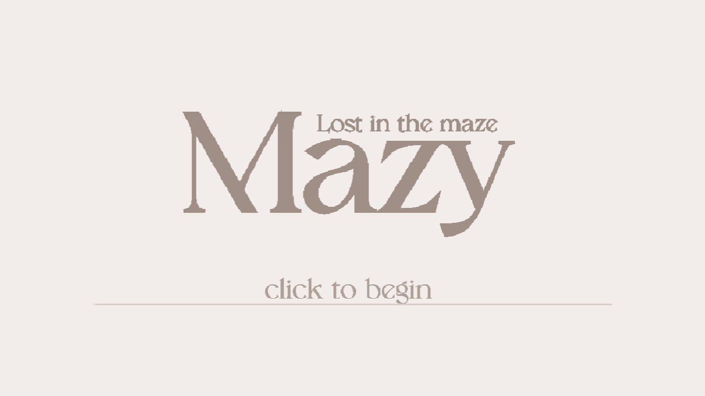
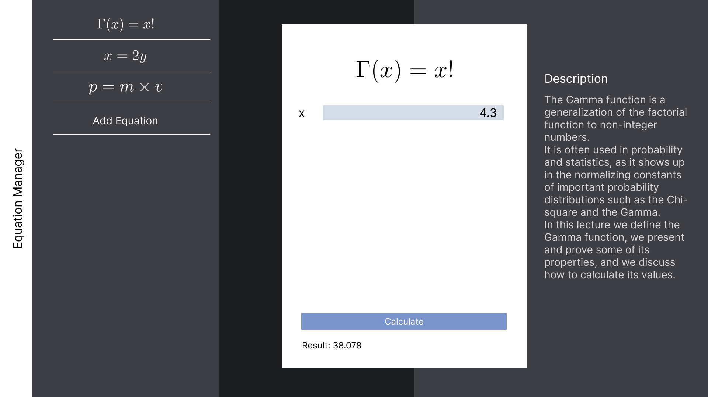
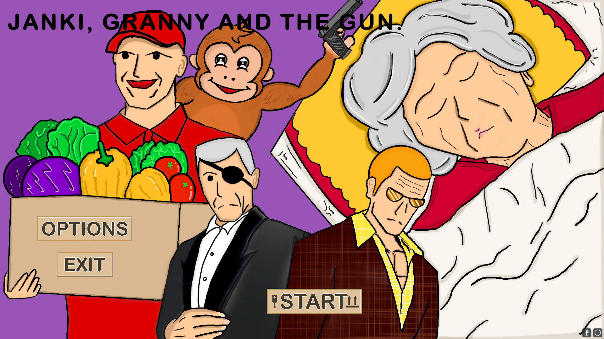

Mazy Lost in the Maze
My scratch project that I was a game designer and programmer. It was a
bullet-hell like game but not too many bullet-hell. I was inspired
from Undertale's combat system and mix it with maze. It quite
challenge because scratch dont have 2D list and many new programing
concept to learn like DFS so I am pround of this.

Dobby "Reparo" Equation Manager
My "Reparo" version of Dobby Equation Manager of my team's project for
computer programing course. It is design to save equation from user
and call it to calculate. Aim to remake ui from quite cartoony into my
personal taste simple black and white one.

YANKI, GRANNY AND THE GUN?
2 players Unity's game made in 48 hours for Chiang Mai Game Jam 2024.